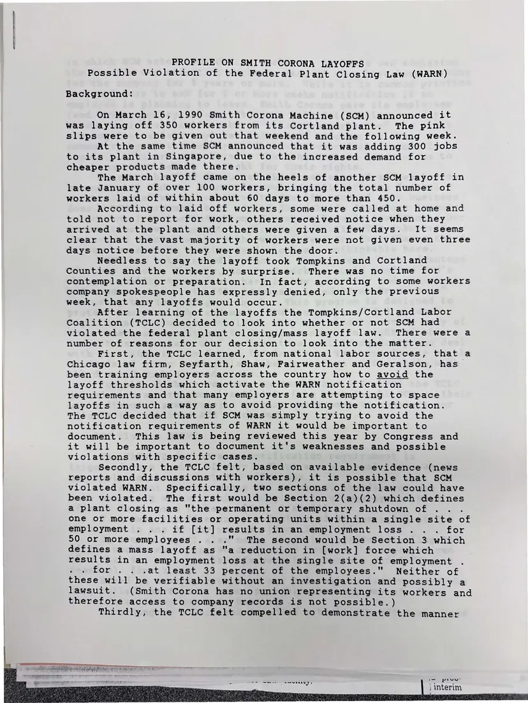
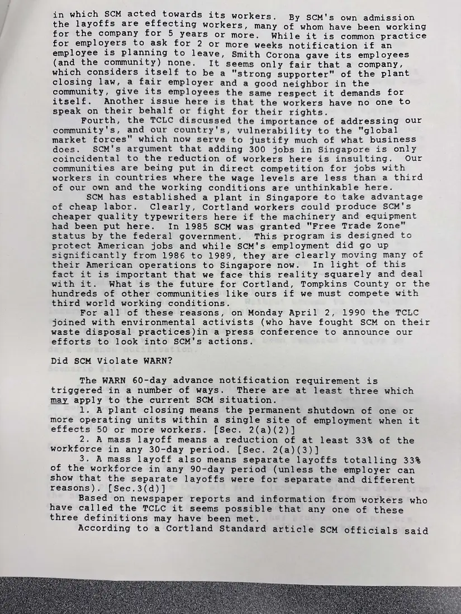
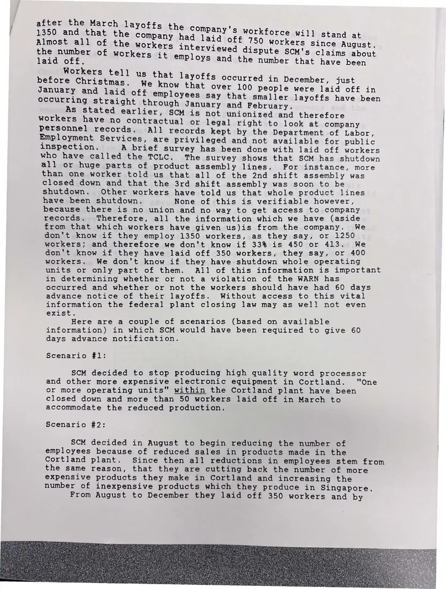
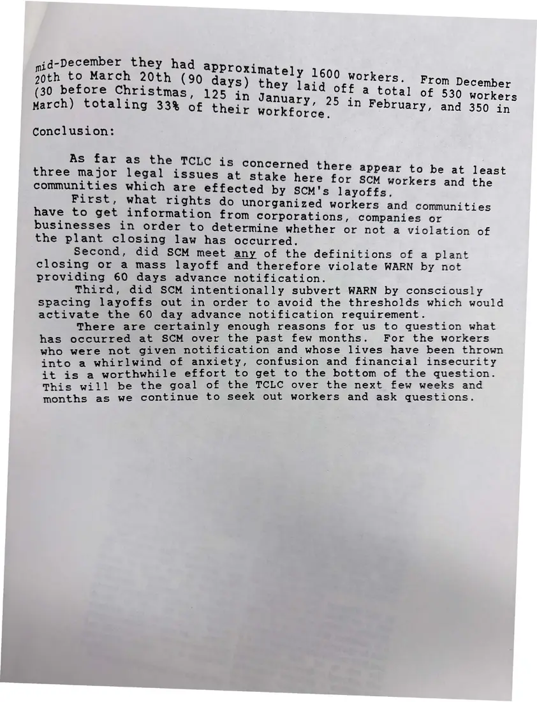

Report, 4 pages
“Profile on Smith Corona Layoffs: Possible Violation of the Federal Plant Closing Law (WARN)”
[1990]Date inferred
The coalition's analysis of Smith Corona's 1989–90 layoffs: what workers reported, how the layoffs were spaced, and the legal questions about whether the company avoided WARN's 60-day notice.
Download or cite this itemPages


(open zoom view)Read the page text (machine-read, mostly readable)
This text was generated automatically from the photograph and has not been corrected. The image is the authoritative record.
PROFILE ON SMITH CORONA LAYOFFS Possible Violation of the Federal Plant Closing Law (WARN) Background: On March 16, 1990 Smith Corona Machine (SCM) announced it was laying off 350 workers from its Cortland plant. The pink slips were to be given out that weekend and the following week. At the same time SCM announced that it was adding 300 jobs to its plant in Singapore, due to the increased demand for cheaper products made there. The March layoff came on the heels of another SCM layoff in late January of over 100 workers, bringing the total number of workers laid of within about 60 days to more than 450. According to laid off workers, some were called at home and told not to report for work, others received notice when they arrived at the plant and others were given a few days. It seems clear that the vast majority of workers were not given even three days notice before they were shown the door. Needless to say the layoff took Tompkins and Cortland Counties and the workers by surprise. There was no time for contemplation or preparation. In fact, according to some workers company spokespeople has expressly denied, only the previous week, that any layoffs would occur. After learning of the layoffs the Tompkins/Cortland Labor Coalition (TCLC) decided to look into whether or not SCM had violated the federal plant closing/mass layoff law. There were a number of reasons for our decision to look into the matter. First, the TCLC learned, from national labor sources, that a Chicago law firm, Seyfarth, Shaw, Fairweather and Geralson, has been training employers across the country how to avoid the layoff thresholds which activate the WARN notification requirements and that many employers are attempting to space layoffs in such a way as to avoid providing the notification. The TCLC decided that if SCM was simply trying to avoid the notification requirements of WARN it would be important to document. This law is being reviewed this year by Congress and it will be important to document it's weaknesses and possible violations with specific cases. Secondly, the TCLC felt, based on available evidence (news reports and discussions with workers), it is possible that SCM violated WARN. Specifically, two sections of the law could have been violated. The first would be Section 2(a)(2) which defines a plant closing as "the permanent or temporary shutdown of : one or more facilities or operating units within a single site of employment .. . if [it] results in an employment loss .. . for 50 or more employees . .." The second would be Section 3 which defines a mass layoff as "a reduction in [work] force which results in an employment loss at the single site of employment for .. .at least 33 percent of the employees." Neither of these will be verifiable without an investigation and possibly a lawsuit. (Smith Corona has no union representing its workers and therefore access to company records is not possible.) Thirdly, the TCLC felt compelled to demonstrate the manner I HERG AERP a aCe PE Re : we pa ) interim ayaa


(open zoom view)Read the page text (machine-read, mostly readable)
This text was generated automatically from the photograph and has not been corrected. The image is the authoritative record.
in which SCM acted towards its workers. By SCM's own admission the layoffs are effecting workers, many of whom have been working for the company for 5 years or more. While it is common practice for employers to ask for 2 or more weeks notification if an employee is planning to leave, Smith Corona gave its employees (and the community) none. It seems only fair that a company, which considers itself to be a "strong supporter" of the plant closing law, a fair employer and a good neighbor in the community, give its employees the same respect it demands for itself. Another issue here is that the workers have no one to speak on their behalf or fight for their rights. Fourth, the TCLC discussed the importance of addressing our community's, and our country's, vulnerability to the "global market forces" which now serve to justify much of what business does. SCM's argument that adding 300 jobs in Singapore is only coincidental to the reduction of workers here is insulting. Our communities are being put in direct competition for jobs with workers in countries where the wage levels are less than a third of our own and the working conditions are unthinkable here. SCM has established a plant in Singapore to take advantage of cheap labor. Clearly, Cortland workers could produce SCM's cheaper quality typewriters here if the machinery and equipment had been put here. In 1985 SCM was granted "Free Trade Zone” status by the federal government. This program is designed to protect American jobs and while SCM's employment did go up significantly from 1986 to 1989, they are clearly moving many of their American operations to Singapore now. In light of this fact it is important that we face this reality squarely and deal with it. What is the future for Cortland, Tompkins County or the hundreds of other communities like ours if we must compete with third world working conditions. For all of these reasons, on Monday April 2, 1990 the TCLC joined with environmental activists (who have fought SCM on their waste disposal practices)in a press conference to announce our efforts to look into SCM's actions. Did SCM Violate WARN? The WARN 60-day advance notification requirement is triggered in a number of ways. There are at least three which may apply to the current SCM situation. 1. A plant closing means the permanent shutdown of one or more operating units within a single site of employment when it effects 50 or more workers. [Sec. 2(a)(2)] 2. A mass layoff means a reduction of at least 33% of the workforce in any 30-day period. [Sec. 2(a)(3)] 3. A mass layoff also means separate layoffs totalling 33% of the workforce in any 90-day period (unless the employer can show that the separate layoffs were for separate and different reasons). [Sec.3(d)] Based on newspaper reports and information from workers who have called the TCLC it seems possible that any one of these three definitions may have been met. According to a Cortland Standard article SCM officials said


(open zoom view)Read the page text (machine-read, mostly readable)
This text was generated automatically from the photograph and has not been corrected. The image is the authoritative record.
er i laid Gee. seit empl Workers tell : us that layof : : before Christmas. We know mee dae in December, just : r 100 people were laid off in Se eaeeeelor he off employees Say that smaller layoffs have been aight through January and February. a meeee paeees earlier, SCM is not unionized and therefore ave no contractual or legal right to look at company personnel records. All records kept by the Department of Labor, Employment Services, are privileged and not available for public inspection. A brief survey has been done with laid off workers who have called the TCLC. The survey shows that SCM has shutdown all or huge parts of product assembly lines. For instance, more than one worker told us that all of the 2nd shift assembly was closed down and that the 3rd shift assembly was soon to be shutdown. Other workers have told us that whole product lines have been shutdown. None of this is verifiable however, because there is no union and no way to get access to company records. Therefore, all the information which we have (aside from that which workers have given us)is from the company. We don't know if they employ 1350 workers, as they say, or 1250 workers; and therefore we don't know if 33% is 450 or 413. We don't know if they have laid off 350 workers, they say, or 400 workers. We don't know if they have shutdown whole operating units or only part of them. All of this information is important in determining whether or not a violation of the WARN has occurred and whether or not the workers should have had 60 days advance notice of their layoffs. Without access to this vital information the federal plant closing law may as well not even exist. Here are a couple of scenarios (based on available information) in which SCM would have been required to give 60 days advance notification. Scenario #1: SCM decided to stop producing high quality word processor and other more expensive electronic equipment in Cortland. or more operating units" within the Cortland plant have been closed down and more than 50 workers laid off in March to accommodate the reduced production. "One Scenario #2: SCM decided in August to begin reducing the number of employees because of reduced sales in products made in the Cortland plant. Since then all reductions in employees stem from the same reason, that they are cutting back the number of more expensive products they make in Cortland and increasing the number of inexpensive products which they produce in Singapore. From August to December they laid off 350 workers and by


(open zoom view)Read the page text (machine-read, mostly readable)
This text was generated automatically from the photograph and has not been corrected. The image is the authoritative record.
‘d- ber they had mid-Decem yY fa aPProximately 1600 work ANS rape Fee (90 days) they laid off A EStal aus nese (30 hristmas, 125 in January, 25 in dun of 530 workers March) totaling 33% of their workforce ee ae Conclusion: As far three major communities First, have to get as the TCLC 1S concerned there appear to be at least legal issues at stake here for scy workers and the which are effected by SCM's layoffs. what rights do unorganized workers and communities information from corporations, companies or businesses in order to determine whether or not a violation of the plant closing law has occurred. Second, did SCM meet any of the definitions of a plant closing or a mass layoff and therefore violate WARN by not providing 60 days advance notification. Third, did SCM intentionally subvert WARN by consciously spacing layoffs out in order to avoid the thresholds which would activate the 60 day advance notification requirement. There are certainly enough reasons for us to question what has occurred at SCM over the past few months. For the workers who were not given notification and whose lives have been thrown into a whirlwind of anxiety, confusion and financial insecurity it is a worthwhile effort to get to the bottom of the question. This will be the goal of the TCLC over the next few weeks and months as we continue to seek out workers and ask questions.
See something wrong, or recognize a person or event? Send a correction. If you hold rights in this item or think it should not be public, write to the same address.